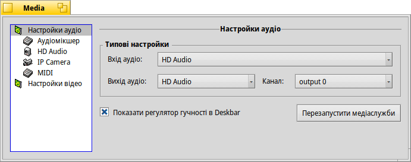
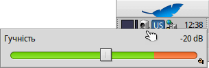
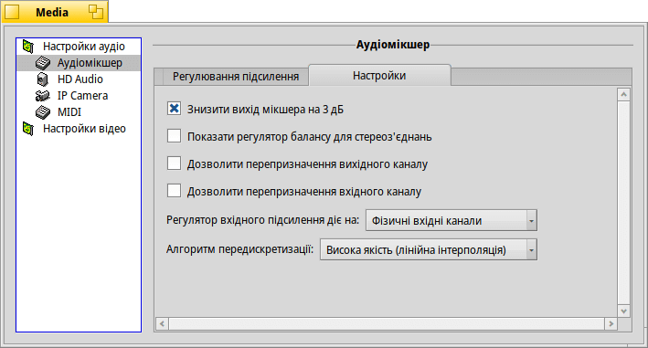
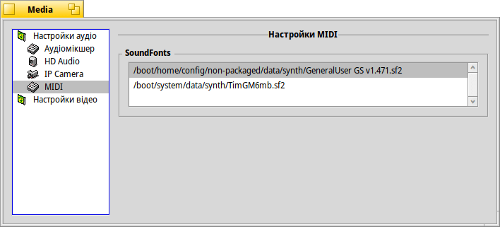
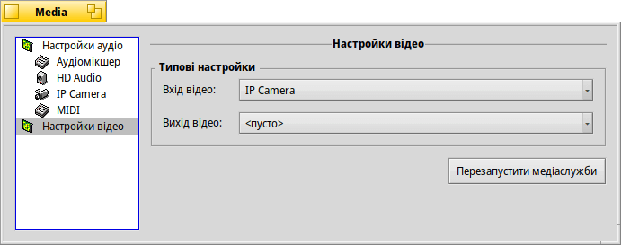

| Індекс |
|
Настройки аудіо Аудіомікшер HD Аudio MIDI Настройки відео |
 Media (Медіа)
Media (Медіа)
| Deskbar: | ||
| Розташування: | /boot/system/preferences/Media | |
| Налаштування: | ~/config/settings/Media/* ~/config/settings/System Audio Mixer ~/config/settings/MediaPrefs Settings - Зберігає позицію вікна панелі. |
Панель налаштувань Медіа управляє настройками аудіо та відео системи. В залежності від повсякденних задач, вони можуть бути як простими, наприклад, регулювання гучності, так і досить низькорівневими, які більшості користувачів ніколи не знадобляться. Різні настройки групуються по категоріям.
 Настройки аудіо
Настройки аудіо

Якщо Ваш комп'ютер обладнано більш ніж одним аудіоінтерфейсом, Ви можете вибрати , та для використання. У рідкісних випадках, коли щось перешкоджає роботі аудіо/відео у Вашій системі, спробуйте .
Позначивши опцію, Ви можете . Це додасть маленький значок до ситемного лотка панели задач:
Лівий клік миші на значку у треї відкриє повзунок гучності, який регулює основний вихід. Крім того, використання коліщатка миші безпосередньо на значку також змінює гучність. Маленький маркер репліканта внизу праворуч, дозволяє Вам вставити цей повзунок, наприклад, на робочий стіл.
Правий клік миші відкриває меню з пунктами , , та .
Аудіомікшер
Аудіомікшер дозволяє контролювати гучність різних аудіопотоків у системі, наприклад, аудіовихід запущених програм.
Коли Аудіомікшер працює з різними аудіопотоками, що проходять через Haiku, він управляє фізичним входом/виходом.
Тут ми бачимо головний вихід, а також повзунки гучності запущеного MediaPlayer. За допомогою цих повзунків Ви можете змішувати аудіовиходи різних пристроїв, програм, тощо.
«Подвійні ручки» повзунків представляють лівий/правий канал стерео. Зазвичай вони рухаються в унісон, але Ви можете контролювати баланс, перемістивши лише одну з них правою кнопкою миші.
Використовуйте опцію , щоб вимкнути звук потоку.
Вкладка містить переважно параметри низького рівня:
Серед усіх цих низькорівневих параметрів настроювання — з якими Ви, скоріш за все, будете експериментувати лише якщо Haiku не підтримує Ваше аудіообладнання «з коробки» — є декілька, які можуть Вас зацікавити.
| дає трохи більше простору, щоб уникнути кліппінгу. | ||
| додає повзунок балансу під повзунками гучності на вкладці замість «подвійних ручок». | ||
| відкриває відповідні вкладки для зіставлення одного каналу з одним або кількома іншими та регулювання їхньої гучності. Наприклад, Ви можете призначити лівий вихідний канал на передній лівий, задній лівий і центральний і встановити різну гучність. | ||
| має опції (низьке використання ЦП і затримка) і (трохи більше використання ЦП і затримка). |
HD Аudio (назва залежить від апаратного забезпечення)
Ця вкладка відображає настройки конкретного обладнання, встановленого в системі.
Кількість вкладок та їхній вміст залежать від апаратного забезпечення.
Тут є три вкладки:
| встановлює і . | ||
| встановлює вихідні рівні для динаміків і навушників. | ||
| встановлює рівні вхідних сигналів. |
Треба сказати, що ці настройки на апаратному рівні можуть здатися дещо безсистемними…
Haiku опитує апаратне забезпечення і намагається осмислити те, що отримує у відповідь. Ви можете побачити різні повзунки з однаковими назвами, які повторюються і т.п. Вам доведеться трохи поекспериментувати, щоб знайти той, який Вам потрібен.
MIDI
У настройках MIDI відображаються усі встановлені SoundFonts, тобто визначення інструментів. Просто виберіть той, який Вам подобається. Подвійний клік на елементі списку відкриває папку у якій він розміщений.
До релізів Haiku включено невеликий, але відносно якісний SoundFont TimGMSoundFont, який можна встановити через менеджер пакетів HaikuDepot; у списку він з'явиться автоматично, після встановлення. Завантажені з мережі Інтернет SoundFonts, слід вручну перемістити у каталог /boot/system/non‑packaged/data/synth/ (або еквівалентну домашню структуру каталогів, дивіться розділ Структура файлової системи).
Настройки відео

Залежно від Вашого обладнання та підтримки драйверів, Ви можете вибрати і .
Як і у випадку з налаштуваннями аудіо, натискання кнопки може виправити незрозумілі помилки.